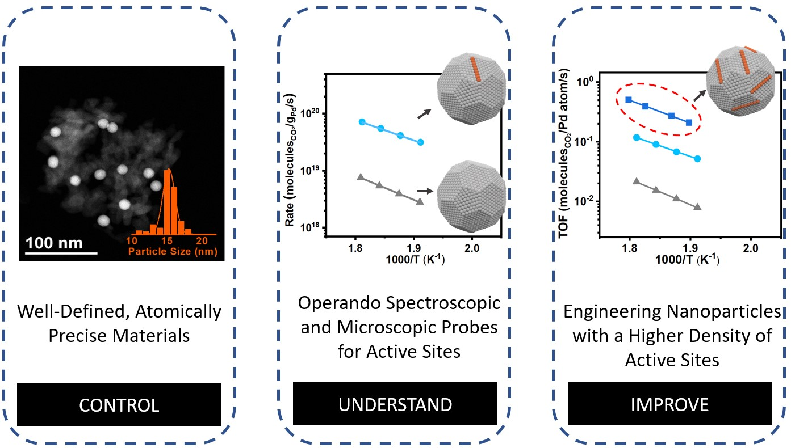
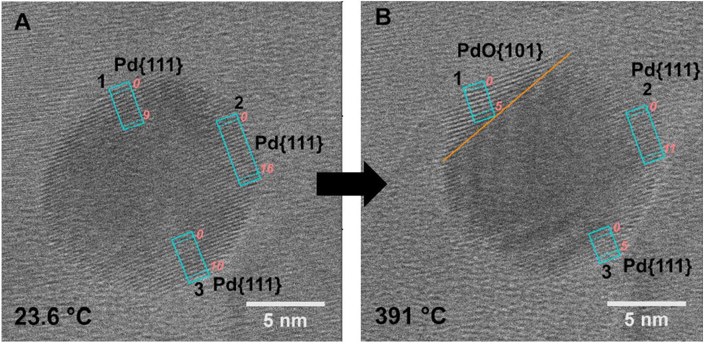

OVERVIEW
Developing efficient processes of resolving environmental and energy problems are among the primary goals in sustainability. Nanoscale engineering of materials with desired catalytic properties is crucial to technological advancements in these fields. The ability to tailor and tune matter at the nanometer scale is scientifically interesting and technologically important. We develop new synthetic strategies for advanced materials with controlled size, shape, and structure using colloidal chemistry and template-directed synthesis. The properties of nanomaterials can indeed substantially deviate from their respective bulk materials because of the unique structures. These well-defined functional materials will enable the development of new chemical conversion processes.

The concept of “control, understand, and improve” will be established in developing advanced nanomaterials. Being able to synthesize uniform structures and identify the active ones that are responsible for the catalyst performance is a crucial task (control and understand). Once the active sites are known, it is then possible to engineer catalysts with a higher density of those specific active sites (improve). In this way, we aim to develop a class of nanomaterials with a high density of active sites to steer the reaction pathways.

Ongoing projects
Project 1: Precision synthesis of nanomaterials for chemical transformations.
Bimetallic and high-entropy nanomaterials provide powerful platforms for creating catalytic properties that are not accessible in single-metal systems, because atomic mixing generates new electronic structures and local coordination environments. In my research, this concept is advanced through precise synthetic control of atomic dispersion and site proximity, ranging from single-atom alloys, where isolated minority atoms are embedded within a host lattice, to high-entropy nanomaterials, where multiple elements are incorporated into one phase to produce a broad distribution of chemically distinct local sites. By rationally designing these multi-site architectures, complementary atomic motifs can be anchored within a single nanomaterial framework to enable cooperative interactions among sites, enhance selectivity in complex multi-step reactions, and establish general structure–function principles for tunable chemical transformations.

Project 2: Understand the surface evolution of catalysts under reaction conditions.
In this project, we aim to connect reactions in controlled lab conditions with realistic environments and understanding complex environmental processes. In reactive environments, the surfaces of most materials likely undergo restructuring in response to the surrounding gaseous reactants. Such changes in geometrical and electronic structures profoundly affect the activity and selectivity of catalysts. The utilization of in-situ/operando diagnosis techniques allows us to identify the active sites which are responsible for the special catalytic application. Therefore, we seek to investigate the nanomaterials described in Projects 1 and 2 through examining their surface restructuring under relevant gas pressures and reaction temperatures. In this work, we will use in situ diffuse reflectance infrared fourier transform spectroscopy, environmental-TEM, ambient pressure-X-ray photoelectron spectroscopy, and other in situ/operando characterizations to address the issue of directly correlating the structure of the catalysts with their function for catalysis.
